<title>Lo que espera tu letra</title>
<meta name="claude:viewport-fit-sides" content="cover">
<link rel="preconnect" href="https://fonts.googleapis.com">
<link rel="stylesheet" href="https://fonts.googleapis.com/css2?family=Cormorant+Garamond:ital,wght@1,400;1,500&family=Inter:wght@400;500;600&display=swap">
<style>
/* Una columna de lectura, como las notas de PACE: arriba la tabla para contestar de una vez, luego una sección por pregunta. */
:root{--papel:#f2ece0;--hoja:#ebe5d6;--tinta:#221f1a;--tinta2:#5d574b;--linea:#cfc7b0;--oliva:#4f5e49;--terra:#a85f3f;--sobre-oliva:#f4f0e6;
 --display:'Cormorant Garamond',Georgia,serif;--texto:'Inter',system-ui,-apple-system,'Segoe UI',sans-serif}
@media (prefers-color-scheme:dark){:root:not([data-theme="light"]){--papel:#1d1b17;--hoja:#27241f;--tinta:#ece5d6;--tinta2:#aaa291;--linea:#433f36;--oliva:#9fb394;--terra:#d68e6c;--sobre-oliva:#1d1b17;color-scheme:dark}}
:root[data-theme="dark"]{--papel:#1d1b17;--hoja:#27241f;--tinta:#ece5d6;--tinta2:#aaa291;--linea:#433f36;--oliva:#9fb394;--terra:#d68e6c;--sobre-oliva:#1d1b17;color-scheme:dark}
body{background:var(--papel);color:var(--tinta);font-family:var(--texto);font-size:16px;line-height:1.55;padding-left:max(16px,env(safe-area-inset-left,0px));padding-right:max(16px,env(safe-area-inset-right,0px));padding-block:28px 72px}
main{max-width:820px;margin:0 auto;display:flex;flex-direction:column;gap:44px}
h1,h2,h3{font-family:var(--display);font-style:italic;font-weight:500;text-wrap:balance;margin:0;line-height:1.15}
h1{font-size:2.4rem}h2{font-size:1.8rem}h3{font-size:1.3rem}
p{margin:0;max-width:68ch}
a{color:var(--oliva)}a:focus-visible,button:focus-visible{outline:2px solid var(--oliva);outline-offset:2px}
.rot{font-size:.72rem;letter-spacing:.14em;text-transform:uppercase;color:var(--tinta2)}
.cab{display:flex;flex-direction:column;gap:12px}
.cab p{color:var(--tinta2)}
.atajo{background:var(--oliva);color:var(--sobre-oliva);border-radius:14px;padding:16px 20px;display:flex;flex-direction:column;gap:4px}
.atajo b{font-family:var(--display);font-style:italic;font-weight:500;font-size:1.4rem;line-height:1.25}
.tabla{overflow-x:auto}
table{border-collapse:collapse;width:100%;font-size:.92rem;min-width:600px}
th{text-align:left;font-weight:500;font-size:.72rem;letter-spacing:.1em;text-transform:uppercase;color:var(--tinta2);padding:8px 12px 8px 0;border-bottom:1px solid var(--linea)}
td{padding:9px 12px 9px 0;border-bottom:1px solid var(--linea);vertical-align:top}
td.n{white-space:nowrap;font-weight:600}td.n a{text-decoration:none}
td.r{white-space:nowrap;color:var(--oliva);font-weight:600}
.grupo{display:flex;flex-direction:column;gap:6px;border-top:2px solid var(--tinta);padding-top:14px}
.grupo p{color:var(--tinta2)}
section.q{display:flex;flex-direction:column;gap:16px;border-top:1px solid var(--linea);padding-top:26px;scroll-margin-top:16px}
.q .hoy{color:var(--tinta2)}
.q .hoy b{color:var(--tinta);font-weight:600}
.ops{display:flex;flex-direction:column;gap:14px}
.op{border:1px solid var(--linea);border-radius:12px;padding:14px 16px;display:flex;flex-direction:column;gap:10px;min-width:0}
.op.reco{border:2px solid var(--oliva);padding:13px 15px}
.op header{display:flex;align-items:baseline;gap:10px;flex-wrap:wrap}
.op header i{font-style:normal;font-weight:600;color:var(--terra);font-size:1.05rem}
.op header span{font-weight:500}
.chip{font-size:.68rem;letter-spacing:.1em;text-transform:uppercase;border:1px solid var(--oliva);color:var(--oliva);border-radius:99px;padding:1px 8px;white-space:nowrap}
.op p{font-size:.95rem;color:var(--tinta2)}
.mide{font-size:.84rem;color:var(--tinta2)}
.mide b{color:var(--tinta);font-weight:600}
.fotos{display:flex;flex-wrap:wrap;gap:14px;align-items:flex-start}
figure{margin:0;display:flex;flex-direction:column;gap:6px;min-width:0}
figure img{border:1px solid var(--linea);border-radius:10px;display:block;height:auto}
figure.m{width:200px;max-width:100%}figure.m img{width:100%}
figure.d{flex:1 1 100%}figure.d img{width:100%}
figcaption{font-size:.8rem;color:var(--tinta2)}
.porque{background:var(--hoja);border-radius:10px;padding:12px 16px;display:flex;flex-direction:column;gap:4px}
.porque b{font-family:var(--display);font-style:italic;font-weight:500;font-size:1.2rem;color:var(--oliva)}
.coste{font-size:.88rem;color:var(--tinta2)}
.coste b{color:var(--tinta);font-weight:600}
.casos table{min-width:560px;font-size:.88rem}
ul.lista{margin:0;padding-left:1.1rem;display:flex;flex-direction:column;gap:10px;max-width:70ch}
ul.lista b{font-weight:600}
.nota{font-size:.86rem;color:var(--tinta2)}
/* El aro de la caza de rendimiento: tres aros vivos para ver la diferencia. */
.aros{display:grid;grid-template-columns:repeat(3,minmax(0,1fr));gap:12px}
@media (max-width:560px){.aros{grid-template-columns:1fr}}
svg.aro{width:100%;max-width:130px;display:block;margin:0 auto}
.aro .pista{stroke:var(--linea)}.aro .arco{stroke:var(--oliva)}
.aro text{fill:var(--tinta);font-family:var(--display);font-style:italic;font-size:17px}
.mando{display:flex;flex-wrap:wrap;gap:8px;align-items:center;font-size:.9rem;color:var(--tinta2)}
.mando button{font:inherit;font-size:.9rem;color:var(--tinta);background:var(--papel);border:1px solid var(--linea);border-radius:999px;padding:5px 14px;cursor:pointer}
.mando button[aria-pressed="true"]{background:var(--tinta);color:var(--papel);border-color:var(--tinta)}
footer{font-size:.82rem;color:var(--tinta2);border-top:1px solid var(--linea);padding-top:14px}
</style>

<main>
<header class="cab">
  <p class="rot">PACE 0.197.0 · lo que espera tu letra · 10 nov. 2026</p>
  <h1>Todas tus preguntas, en una página</h1>
  <p>Aquí están juntas las preguntas que tenías repartidas en tres páginas: la auditoría (D-1 a D-7 y sus propuestas), la revisión de ChatGPT (4, 6 y 7) y la caza de rendimiento (el aro, V1 y V2). Cada una lleva cómo es hoy, sus opciones pintadas sobre la app de verdad y una recomendada. Nada está montado.</p>
  <div class="atajo"><span class="rot" style="color:inherit;opacity:.85">Si te vale lo recomendado</span><b>Contesta «todo lo recomendado».</b><span>O letra a letra, por ejemplo «D-1 A, D-2 B, 4 B…». Las letras y los nombres son los de siempre.</span></div>
</header>

<section aria-labelledby="t-tabla" style="display:flex;flex-direction:column;gap:12px">
  <h2 id="t-tabla">Las dieciséis, de un vistazo</h2>
  <div class="tabla"><table>
    <thead><tr><th>Pregunta</th><th>En una frase</th><th>Recomendada</th><th>Si la eliges</th></tr></thead>
    <tbody>
      <tr><td colspan="4" class="rot" style="padding-top:14px">Frenan cobrar</td></tr>
      <tr><td class="n"><a href="#d1">D-1</a></td><td>El precio: mensual y de por vida, o solo de por vida</td><td class="r">A · como está</td><td>Nada</td></tr>
      <tr><td class="n"><a href="#d4">D-4</a></td><td>El repositorio, público o privado</td><td class="r">C · público, sin pistas</td><td>Poco</td></tr>
      <tr><td class="n"><a href="#d5">D-5</a></td><td>Qué rutinas de pago se quedan el día de v1</td><td class="r">B · las acabadas</td><td>Poco</td></tr>
      <tr><td class="n"><a href="#p1">Propuesta 1</a></td><td>Una fila para comprar en Ajustes</td><td class="r">A · la fila</td><td>Poco</td></tr>
      <tr><td colspan="4" class="rot" style="padding-top:14px">Antes de v1</td></tr>
      <tr><td class="n"><a href="#d2">D-2</a></td><td>Cuándo sale la pantalla de PACE completo en la bienvenida</td><td class="r">B · tras la primera pausa</td><td>Medio</td></tr>
      <tr><td class="n"><a href="#p4">Propuesta 4</a></td><td>La bienvenida y la invitación, sin «v1»</td><td class="r">A · sin «v1»</td><td>Poco</td></tr>
      <tr><td class="n"><a href="#p2">Propuesta 2</a></td><td>El final del ejercicio dice lo que sigue</td><td class="r">A · el botón lo nombra</td><td>Poco</td></tr>
      <tr><td class="n"><a href="#d3">D-3</a></td><td>Una línea los lunes para la semana que no se ve</td><td class="r">B · la línea</td><td>Medio</td></tr>
      <tr><td class="n"><a href="#d7">D-7</a></td><td>Ofrecer PACE completo tras un «Sí» o al cerrar la jornada</td><td class="r">A · no ofrecerlo</td><td>Nada</td></tr>
      <tr><td class="n"><a href="#c4">4</a></td><td>«Cambiar» el día con un Foco en marcha</td><td class="r">B · el bloque pasa al día nuevo</td><td>Medio</td></tr>
      <tr><td class="n"><a href="#c6">6</a></td><td>Lo hecho por tu cuenta, en Estadísticas › Hoy</td><td class="r">A · debajo, aparte</td><td>Medio</td></tr>
      <tr><td class="n"><a href="#c7">7</a></td><td>Cuántos minutos dice una pausa hecha</td><td class="r">A · lo que hiciste</td><td>Poco</td></tr>
      <tr><td class="n"><a href="#aro">Aro</a></td><td>Cómo avanza el aro con un Foco en marcha</td><td class="r">B · sin deslizar en bloques largos</td><td>Poco</td></tr>
      <tr><td class="n"><a href="#v1">V1</a></td><td>Enterarse de una versión nueva con la web abierta</td><td class="r">B · preguntar al volver y cada hora</td><td>Medio</td></tr>
      <tr><td class="n"><a href="#v2">V2</a></td><td>No cortar una sesión al actualizar en otra pestaña</td><td class="r">B · espera a que acabe</td><td>Medio</td></tr>
      <tr><td class="n"><a href="#d6">D-6</a></td><td>Los logros de trasnochar, Búho y Ocaso</td><td class="r">B · retirarlos</td><td>Poco</td></tr>
    </tbody>
  </table></div>
  <p class="nota">Dar la prueba a los testers no espera a ninguna de estas: espera a dos arreglos que no piden letra (que la quinta pausa no gaste la petición de valoración y que el fin de la pausa avise en el móvil) y a lo que solo puedes hacer tú, al final. Una pregunta más de <code>STATE.md</code>, S3, aún no tiene opciones escritas: va al final.</p>
</section>

<div class="grupo"><p class="rot">Primero</p><h2>Lo que frena cobrar</h2><p>El precio, lo que ve quien lee el código, lo que se queda cada uno el día de v1 y dónde se compra.</p></div>

<section class="q" id="d1">
  <p class="rot">D-1</p>
  <h3>¿Vendes el mensual con 7 días gratis y el de por vida, o solo el de por vida?</h3>
  <p class="hoy"><b>Hoy:</b> desde v1, 2,99 € al mes con 7 días gratis o 19,99 € una vez (lo decidiste el 15 oct. y el 5 nov.). Hasta v1, en la web, solo el de por vida. La auditoría externa vendería solo el de por vida, a 19,99 € de lanzamiento y más caro después, porque cree que casi nadie elegirá el mensual y es lo que más complica el cobro.</p>
  <div class="casos tabla"><table>
    <thead><tr><th>Quién</th><th>A · como está</th><th>B · solo de por vida</th></tr></thead>
    <tbody>
      <tr><td><b>Lucía</b>, oficina, quiere probar antes de pagar</td><td>Empieza el mensual, prueba 7 días PACE completo sin pagar y decide</td><td>No puede probarlo: o paga 19,99 € a ciegas o se queda con lo gratis</td></tr>
      <tr><td><b>Marco</b>, paga una vez y se olvida</td><td>Paga 19,99 € una vez</td><td>Paga 19,99 € una vez (y quien llegue más tarde, más)</td></tr>
      <tr><td><b>Ana</b>, solo lo usa en temporada de cierre, dos meses</td><td>Paga 2,99 € dos meses (5,98 €) y lo deja</td><td>Paga 19,99 € o no lo compra</td></tr>
    </tbody>
  </table></div>
  <div class="ops">
    <div class="op reco"><header><i>A</i><span>Como está: mensual con 7 días gratis y de por vida, desde v1</span><span class="chip">Recomendada</span></header></div>
    <div class="op"><header><i>B</i><span>Solo de por vida: 19,99 € de lanzamiento y más caro después</span></header></div>
  </div>
  <div class="porque"><b>Recomiendo A</b><span>La semana de prueba solo existe con el mensual, y es lo único que deja probar PACE completo sin pagar; lo difícil del cobro ya está hecho.</span></div>
  <p class="coste">Si eliges A: <b>nada</b>. Si eliges B: <b>medio</b> (quitar el mensual de la tienda, la prueba y sus avisos, y los textos que lo nombran).</p>
</section>

<section class="q" id="d4">
  <p class="rot">D-4</p>
  <h3>¿Cierras el código de PACE antes de cobrar?</h3>
  <p class="hoy"><b>Hoy:</b> el repositorio es público (18 oct.). Cualquiera puede leer en <code>STATE.md</code> en qué disco viven las llaves y, en las auditorías, fallos del cobro que aún no están cerrados.</p>
  <div class="casos tabla"><table>
    <thead><tr><th>Quién</th><th>A · como está</th><th>B · privado</th><th>C · público, sin pistas</th></tr></thead>
    <tbody>
      <tr><td><b>Tú</b>, cada mes</td><td>Las pruebas de cada subida no cuestan</td><td>Pasado el cupo gratis de GitHub, los minutos de pruebas se pagan (la suite entera son unos 43 min por subida)</td><td>No cuesta</td></tr>
      <tr><td><b>Alguien curioso</b> que lee el repo</td><td>Sabe dónde viven las llaves y qué fallos de cobro siguen abiertos</td><td>No ve nada</td><td>Ve el código, sin dónde viven las llaves ni los fallos abiertos hasta cerrarlos</td></tr>
      <tr><td><b>Un tester</b></td><td>Nada cambia</td><td>Nada cambia</td><td>Nada cambia</td></tr>
    </tbody>
  </table></div>
  <div class="ops">
    <div class="op"><header><i>A</i><span>Como está</span></header></div>
    <div class="op"><header><i>B</i><span>Privado antes de encender la venta</span></header></div>
    <div class="op reco"><header><i>C</i><span>Público, sin decir dónde viven las llaves y sin las notas de fallos de cobro mientras estén abiertos</span><span class="chip">Recomendada</span></header></div>
  </div>
  <div class="porque"><b>Recomiendo C</b><span>Quita las pistas y no paga minutos de pruebas, que en un repo privado se cobran.</span></div>
  <p class="coste">Si eliges A: <b>nada</b>. B: <b>poco</b> (un botón, y el coste de cada mes). C: <b>poco</b> (sacar dos cosas de los textos y, mientras haya fallos de cobro abiertos, apuntarlos fuera del repo).</p>
</section>

<section class="q" id="d5">
  <p class="rot">D-5</p>
  <h3>El día de v1, ¿qué rutinas de pago se queda quien ya usaba PACE?</h3>
  <p class="hoy"><b>Hoy:</b> decidiste que se queda «lo que ya hizo alguna vez», pero la app cuenta cualquier rutina empezada, terminada o no. Quien abra las 18 rutinas de pago unos segundos antes de v1 se las queda todas, y el código público lo explica.</p>
  <div class="casos tabla"><table>
    <thead><tr><th>Quién</th><th>A · basta con empezarla</th><th>B · solo las que acabó</th></tr></thead>
    <tbody>
      <tr><td><b>Pablo</b>: hizo enteras 3 rutinas de pago, varias veces</td><td>Se queda 3</td><td>Se queda 3</td></tr>
      <tr><td><b>Sara</b>: abrió 10 para mirarlas y acabó 2</td><td>Se queda 10</td><td>Se queda 2</td></tr>
      <tr><td><b>Alguien que leyó el código</b>: abre las 18 un segundo el día antes</td><td>Se queda las 18</td><td>No se queda ninguna</td></tr>
    </tbody>
  </table></div>
  <div class="ops">
    <div class="op"><header><i>A</i><span>Como está: basta con haberla empezado</span></header></div>
    <div class="op reco"><header><i>B</i><span>Solo las que acabó alguna vez (o contestó «¿Te ayudó?», que solo sale al acabar)</span><span class="chip">Recomendada</span></header></div>
  </div>
  <div class="porque"><b>Recomiendo B</b><span>Es lo que quiere decir «ya la hizo», y nadie pierde una rutina que de verdad usaba.</span></div>
  <p class="coste">Si eliges A: <b>nada</b>. B: <b>poco</b> (cambiar qué cuenta en la lista, con su prueba).</p>
</section>

<section class="q" id="p1">
  <p class="rot">Propuesta 1</p>
  <h3>¿Pones en Ajustes una fila para comprar PACE completo?</h3>
  <p class="hoy"><b>Hoy:</b> hasta v1 no hay nada cerrado, así que el botón de compra no le sale nunca a quien ya usa PACE; con la tienda encendida, en Ajustes solo está «Introducir código».</p>
  <div class="fotos">
    <figure class="m">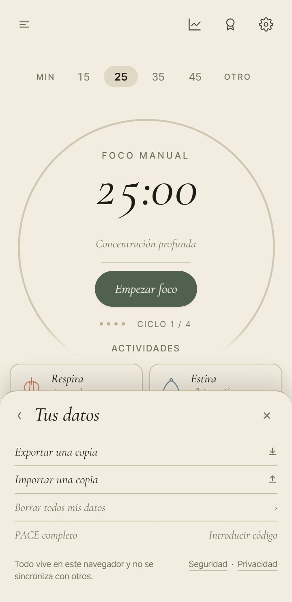<figcaption>Hoy, con la tienda encendida.</figcaption></figure>
    <figure class="m">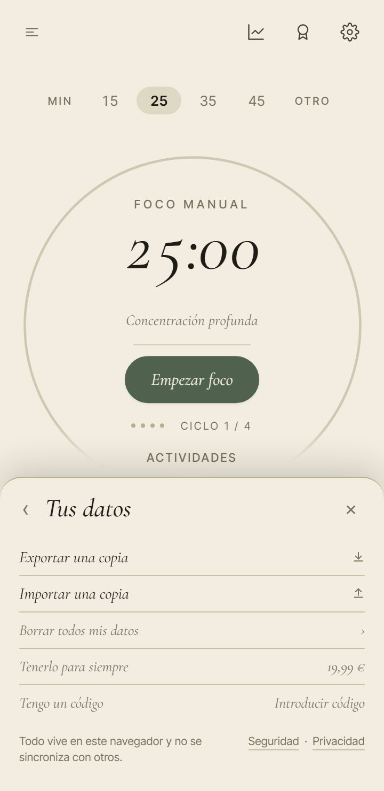<figcaption><b>A</b> · «Tenerlo para siempre · 19,99 €» y, debajo, «Tengo un código».</figcaption></figure>
  </div>
  <div class="ops">
    <div class="op reco"><header><i>A</i><span>La fila nueva en Ajustes; abre la invitación de siempre con su botón de compra</span><span class="chip">Recomendada</span></header><p class="mide">No salta sola ni tapa nada: es una fila más en «Tus datos».</p></div>
    <div class="op"><header><i>B</i><span>Nada en la app: se compra solo en pacegrass.app/premium</span></header></div>
  </div>
  <div class="porque"><b>Recomiendo A</b><span>Sin ella, encender la venta no se lo enseña a nadie que ya use PACE, que es quien antes pagaría.</span></div>
  <p class="coste">Si eliges A: <b>poco</b>. B: <b>nada</b>.</p>
</section>

<div class="grupo"><p class="rot">Después</p><h2>Lo demás, antes de v1</h2><p>Lo que se ve y cómo se mueve. Cada foto es la app de verdad en el móvil a 360 px o en el ordenador a 1536 × 710, con la opción puesta encima.</p></div>

<section class="q" id="d2">
  <p class="rot">D-2</p>
  <h3>En la bienvenida, ¿sale PACE completo al principio o después de la primera pausa?</h3>
  <p class="hoy"><b>Hoy:</b> la bienvenida tiene tres pantallas: la de PACE, «¿Cómo es tu semana?» y PACE completo, con cuatro cosas que aún no entiende quien no ha hecho nada. Las dos auditorías lo ven pronto.</p>
  <div class="fotos">
    <figure class="m">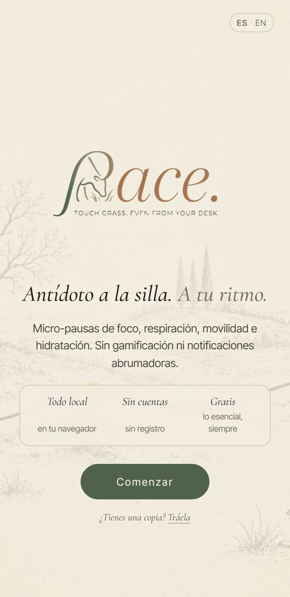<figcaption>Hoy, 1 · la bienvenida.</figcaption></figure>
    <figure class="m"><figcaption>Hoy, 2 · tu semana, con «Continuar».</figcaption></figure>
    <figure class="m">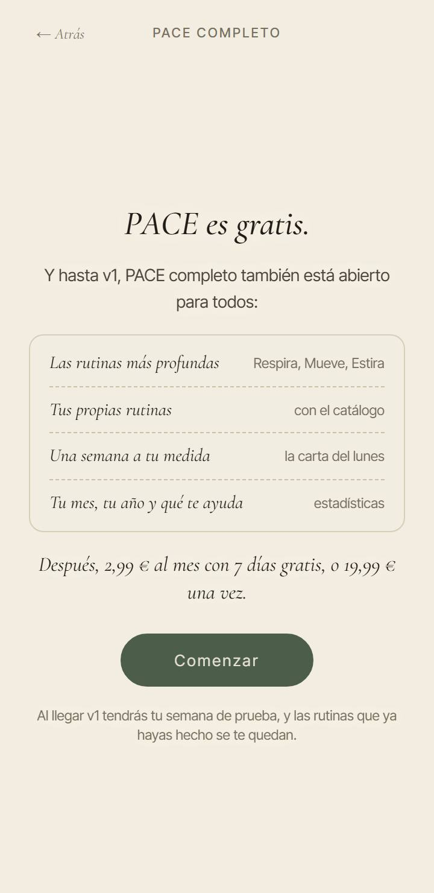<figcaption>Hoy, 3 · PACE completo, antes de hacer nada.</figcaption></figure>
  </div>
  <div class="ops">
    <div class="op"><header><i>A</i><span>Como está: tres pantallas, PACE completo la última</span></header></div>
    <div class="op reco"><header><i>B</i><span>Bienvenida y semana; PACE completo sale una vez, al acabar la primera pausa entera</span><span class="chip">Recomendada</span></header>
      <div class="fotos">
        <figure class="m">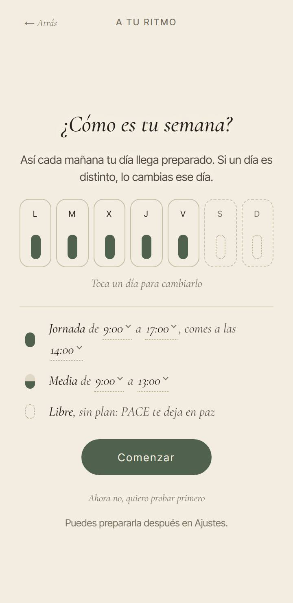<figcaption><b>B</b>, 2 · la semana es la última: su botón ya dice «Comenzar» (lo pinta la propia app).</figcaption></figure>
        <figure class="m">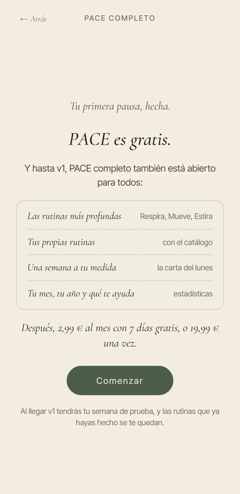<figcaption><b>B</b>, después · al acabar la primera pausa entera, la misma pantalla con «Tu primera pausa, hecha.» arriba.</figcaption></figure>
      </div>
      <figure class="d">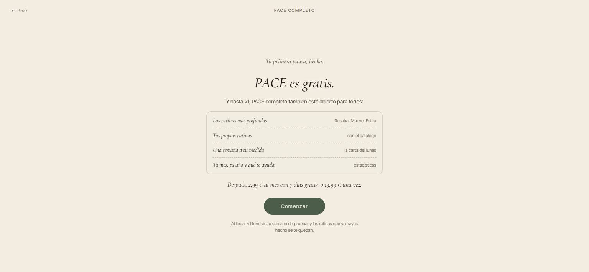<figcaption><b>B</b> a 1536 × 710.</figcaption></figure>
      <p class="mide">Medido: la frase nueva no empuja nada fuera. El último botón queda a <b>592 de 740 px</b> en el móvil y a <b>560 de 710</b> en el ordenador, sin scroll.</p>
    </div>
  </div>
  <div class="porque"><b>Recomiendo B</b><span>Cuando ya sabe qué es una pausa, la oferta se entiende.</span></div>
  <p class="coste">Si eliges A: <b>nada</b>. B: <b>medio</b> (sacar la pantalla del final de la bienvenida y enseñarla una vez tras la primera pausa entera, con su prueba).</p>
</section>

<section class="q" id="p4">
  <p class="rot">Propuesta 4</p>
  <h3>¿Quitas «v1» de la bienvenida y de la invitación?</h3>
  <p class="hoy"><b>Hoy:</b> «Y hasta v1…» y «Al llegar v1…»: quien llega no sabe qué es «v1».</p>
  <div class="fotos">
    <figure class="m">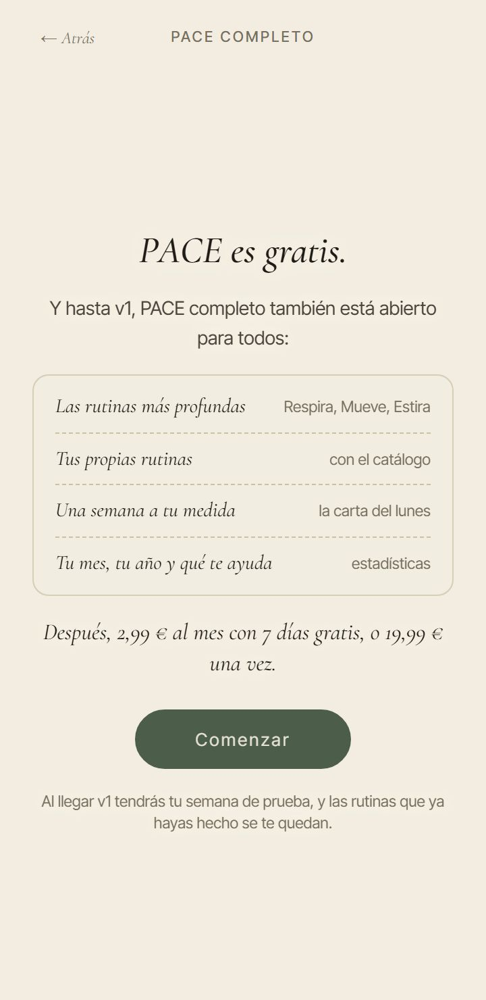<figcaption>Hoy: «Y hasta v1…».</figcaption></figure>
    <figure class="m">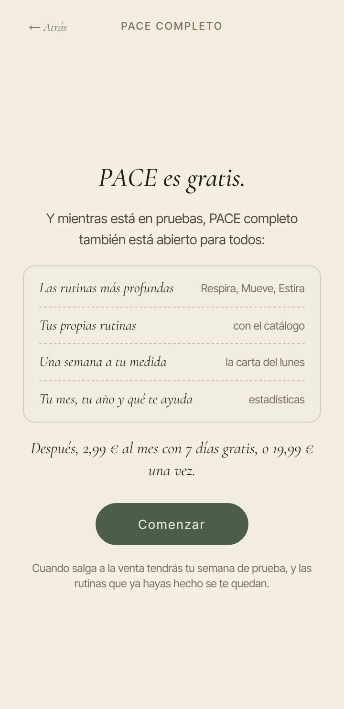<figcaption><b>A</b> · «Y mientras está en pruebas…» y «Cuando salga a la venta…».</figcaption></figure>
  </div>
  <div class="ops">
    <div class="op reco"><header><i>A</i><span>Cambiar las frases, en la bienvenida y en la invitación («Llega con la versión 1»)</span><span class="chip">Recomendada</span></header></div>
    <div class="op"><header><i>B</i><span>Dejar «v1»</span></header></div>
  </div>
  <div class="porque"><b>Recomiendo A</b><span>Se entiende a la primera qué es gratis y hasta cuándo.</span></div>
  <p class="coste">Si eliges A: <b>poco</b> (textos en español e inglés). B: <b>nada</b>.</p>
</section>

<section class="q" id="p2">
  <p class="rot">Propuesta 2</p>
  <h3>Al acabar el ejercicio de una pausa, ¿el botón dice lo que sigue?</h3>
  <p class="hoy"><b>Hoy:</b> dice «Volver al inicio» y, por libre, el aro espera en 00:00 con «Empezar otro ciclo».</p>
  <div class="fotos">
    <figure class="m">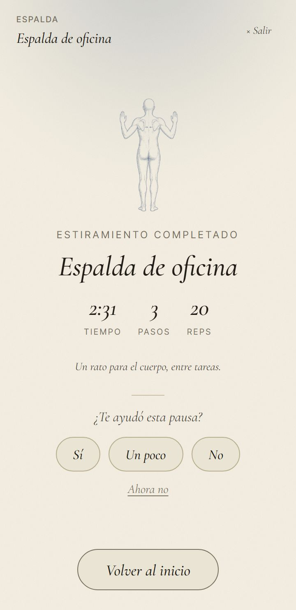<figcaption>Hoy: «Volver al inicio».</figcaption></figure>
    <figure class="m">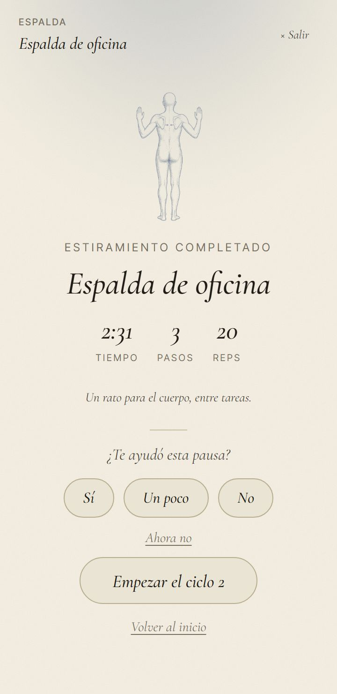<figcaption><b>A</b>, por libre: «Empezar el ciclo 2» y, debajo, «Volver al inicio».</figcaption></figure>
  </div>
  <figure class="d">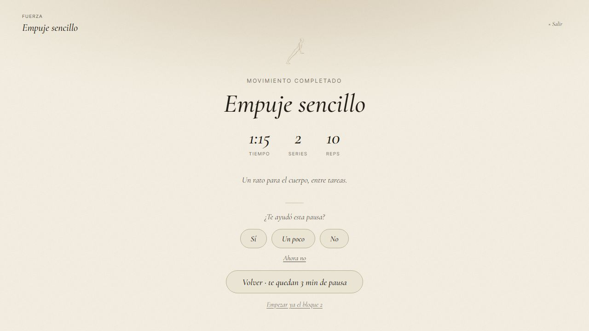<figcaption><b>A</b>, con jornada, a 1280: «Volver · te quedan 3 min de pausa» y «Empezar ya el bloque 2».</figcaption></figure>
  <div class="ops">
    <div class="op reco"><header><i>A</i><span>El botón del final nombra lo que sigue; la salida de siempre, debajo</span><span class="chip">Recomendada</span></header></div>
    <div class="op"><header><i>B</i><span>El final no cambia; solo el aro, al volver por libre, enseña los minutos del ciclo siguiente en vez de 00:00</span></header></div>
    <div class="op"><header><i>C</i><span>Como está</span></header></div>
  </div>
  <div class="porque"><b>Recomiendo A</b><span>Un toque menos y sabe qué toca: es lo que cierra el círculo bloque, pausa, bloque.</span></div>
  <p class="coste">Si eliges A: <b>poco</b>. B: <b>poco</b>. C: <b>nada</b>.</p>
</section>

<section class="q" id="d3">
  <p class="rot">D-3 · con la propuesta 3</p>
  <h3>¿Dices, los lunes, que existe una semana hecha a tu medida?</h3>
  <p class="hoy"><b>Hoy:</b> la semana que cambia y la carta del lunes son lo más propio de PACE completo, y no se ven ni teniéndolo ni sin tenerlo (el 20 oct. decidiste «nada nuevo en pantalla»). Las fotos son un lunes desde v1, de alguien cuya semana de prueba ya acabó.</p>
  <div class="fotos">
    <figure class="m">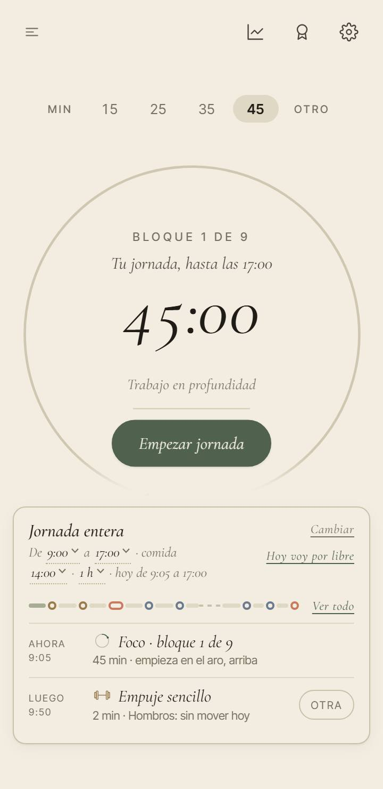<figcaption>Hoy, la home del móvil: no queda sitio para una línea más.</figcaption></figure>
    <figure class="m">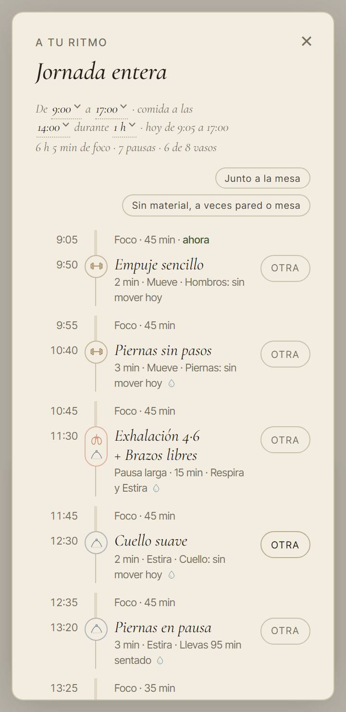<figcaption>Hoy, «Ver todo».</figcaption></figure>
  </div>
  <div class="ops">
    <div class="op"><header><i>A</i><span>Como está</span></header></div>
    <div class="op reco"><header><i>B</i><span>Una línea solo los lunes, a quien no tiene PACE completo: «Los lunes, PACE completo te escribe tu semana ›». Al tocarla, la invitación</span><span class="chip">Recomendada</span></header>
      <div class="fotos">
        <figure class="m">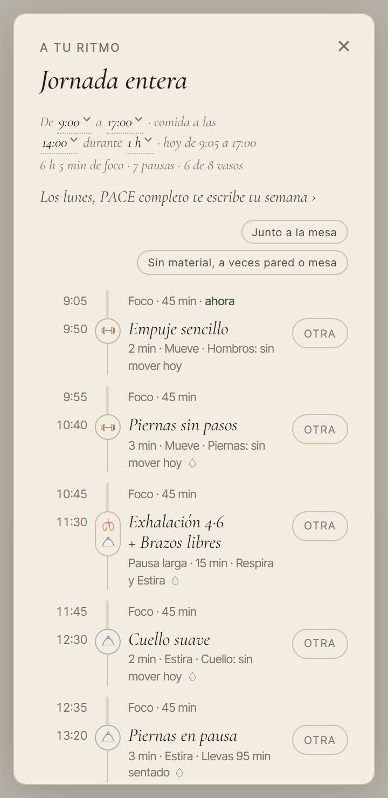<figcaption><b>B</b> en el móvil, dentro de «Ver todo», bajo el resumen del día.</figcaption></figure>
      </div>
      <figure class="d">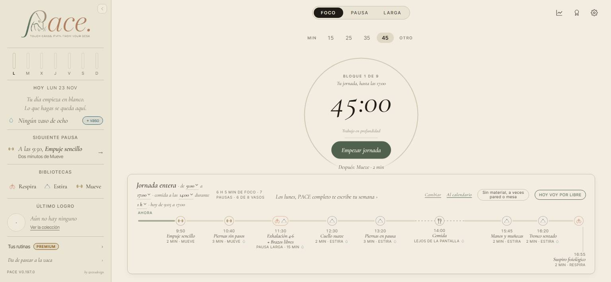<figcaption><b>B</b> a 1536 × 710, en la fila del resumen de la tarjeta.</figcaption></figure>
      <p class="mide">Medido: en el móvil la home no cambia; dentro de «Ver todo», que ya se desliza, la línea ocupa <b>30 px</b> y baja la lista 30 px. En el ordenador baja <b>12 px</b> lo de debajo y la página sigue sin scroll (0 px de más). Nada se pone encima de nada.</p>
    </div>
    <div class="op"><header><i>C</i><span>B y, para quien sí lo tiene, una frase de la semana en el mismo sitio, como las de las pausas</span></header>
      <div class="fotos">
        <figure class="m">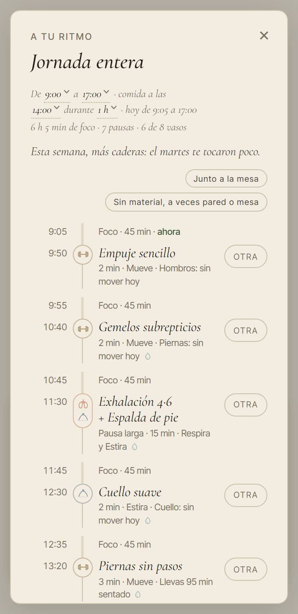<figcaption><b>C</b>, con PACE completo: «Esta semana, más caderas: el martes te tocaron poco.»</figcaption></figure>
      </div>
      <figure class="d">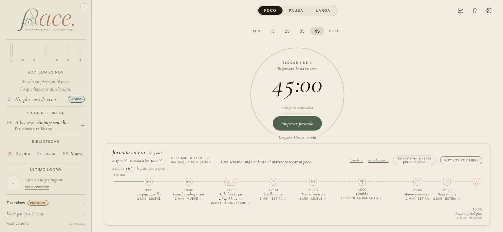<figcaption><b>C</b> a 1536 × 710. Mismas medidas que B.</figcaption></figure>
    </div>
  </div>
  <div class="porque"><b>Recomiendo B</b><span>Una vez por semana, cuando llegaría la carta, y sin salir en la home: anuncia sin insistir.</span></div>
  <p class="coste">Si eliges A: <b>nada</b>. B: <b>medio</b>. C: <b>medio y algo más</b> (la frase pide elegir cada semana un motivo que sea verdad).</p>
</section>

<section class="q" id="d7">
  <p class="rot">D-7</p>
  <h3>¿Ofreces PACE completo después de un «Sí» o al cerrar la jornada?</h3>
  <p class="hoy"><b>Hoy:</b> la invitación solo sale al tocar un candado, en la bienvenida, el día de v1 y al acabar la prueba. Tu regla dice que nada propone algo cerrado, y en la lista de «nunca» está la publicidad intrusiva. Las fotos son un lunes desde v1, sin PACE completo.</p>
  <div class="fotos">
    <figure class="m">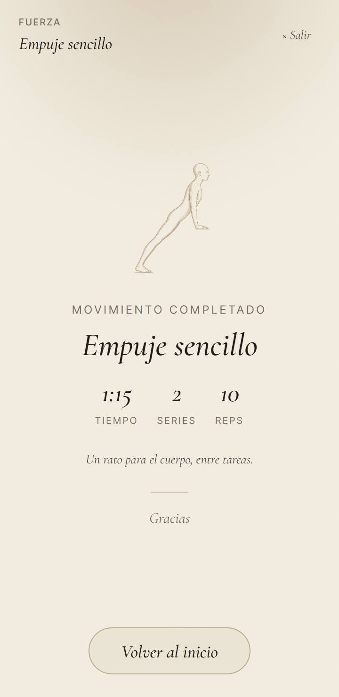<figcaption><b>A</b> (hoy) · tras un «Sí» a «¿Te ayudó esta pausa?»: «Gracias».</figcaption></figure>
    <figure class="m">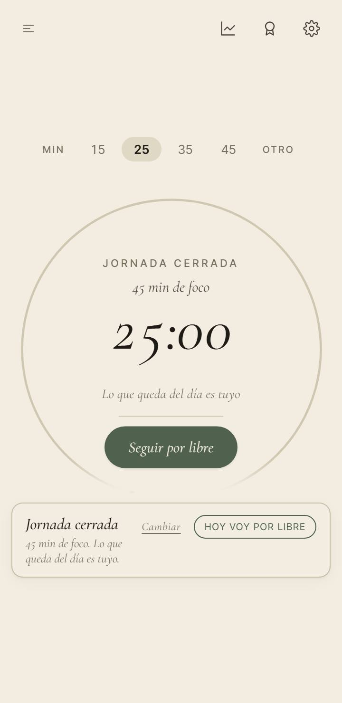<figcaption><b>A</b> (hoy) · la jornada cerrada.</figcaption></figure>
  </div>
  <div class="ops">
    <div class="op reco"><header><i>A</i><span>Como está; el momento de cada semana lo da la línea de los lunes (D-3 B)</span><span class="chip">Recomendada</span></header></div>
    <div class="op"><header><i>B</i><span>Una línea tras un «Sí», a quien no tiene PACE completo, como mucho una vez por semana</span></header>
      <div class="fotos">
        <figure class="m">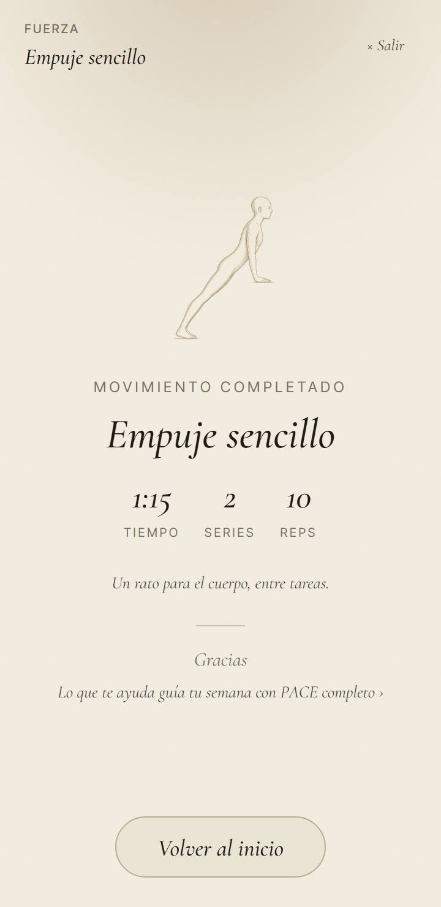<figcaption><b>B</b> · «Lo que te ayuda guía tu semana con PACE completo ›».</figcaption></figure>
      </div>
      <figure class="d">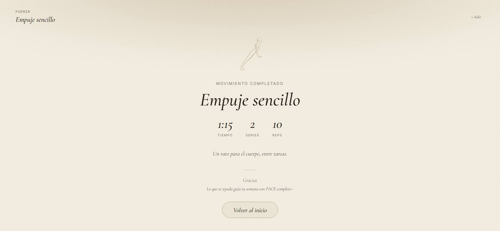<figcaption><b>B</b> a 1536 × 710.</figcaption></figure>
      <p class="mide">Medido: la línea (25 px) cabe entre «Gracias» y el botón; «Volver al inicio» no se mueve (<b>716 de 740 px</b> en el móvil, <b>670 de 710</b> en el ordenador).</p>
    </div>
    <div class="op"><header><i>C</i><span>Una línea al cerrar una jornada completa, como mucho una vez por semana</span></header>
      <div class="fotos">
        <figure class="m">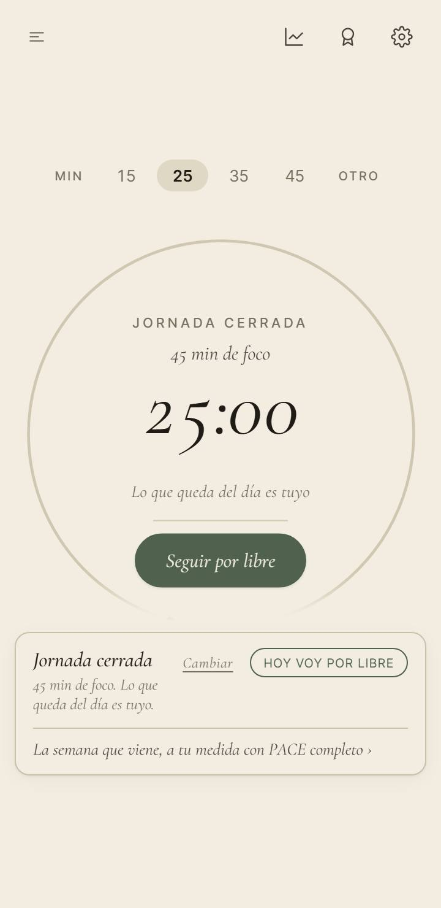<figcaption><b>C</b> · «La semana que viene, a tu medida con PACE completo ›», al pie de la tarjeta.</figcaption></figure>
      </div>
      <figure class="d">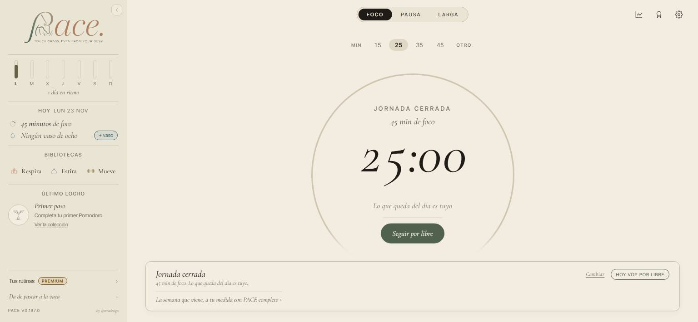<figcaption><b>C</b> a 1536 × 710.</figcaption></figure>
      <p class="mide">Medido: la tarjeta crece <b>38 px</b> en el móvil (acaba a 646 de 740) y <b>19 px</b> en el ordenador (685 de 710); sin scroll en ninguno.</p>
    </div>
  </div>
  <div class="porque"><b>Recomiendo A</b><span>Una oferta pegada a «¿Te ayudó?» tuerce la respuesta que alimenta «Qué te ayuda», y el cierre del día es para soltar el móvil.</span></div>
  <p class="coste">Si eliges A: <b>nada</b>. B: <b>poco</b>. C: <b>poco</b>.</p>
</section>

<section class="q" id="c4">
  <p class="rot">4 · revisión de ChatGPT</p>
  <h3>Si cambias el día con un Foco en marcha, ¿qué pasa con ese bloque?</h3>
  <p class="hoy"><b>Hoy:</b> a las 9:00 empiezas la jornada entera con un bloque de 45 min; a las 9:10 pulsas «Cambiar» y eliges «Una hora». El aro sigue hasta las 9:45, pero el día nuevo cree que el bloque empezó a las 9:10 y te pone la pausa a las 9:35, en mitad del bloque.</p>
  <div class="fotos">
    <figure class="m">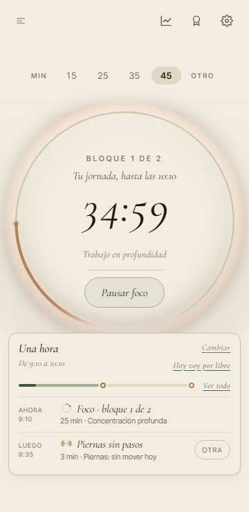<figcaption>Hoy, 9:10: el aro dice 34:59; el panel, «Luego 9:35».</figcaption></figure>
    <figure class="m">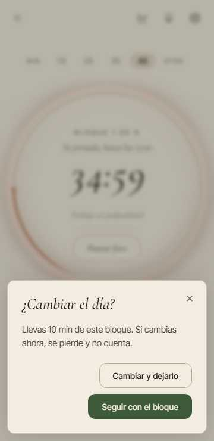<figcaption><b>A</b> · una ventana pregunta: «Cambiar y dejarlo» o «Seguir con el bloque». Tapa la pantalla hasta que contestas.</figcaption></figure>
    <figure class="m">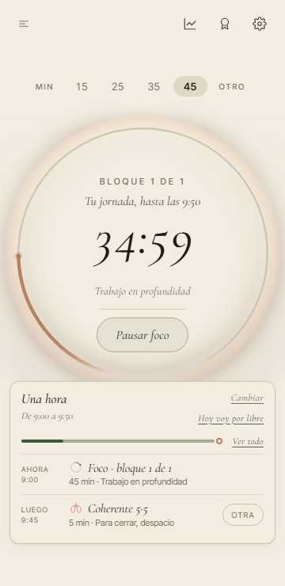<figcaption><b>B</b> · el bloque es el 1 del día nuevo, a su hora: «Una hora» de 9:00 a 9:50. No tapa nada.</figcaption></figure>
    <figure class="m">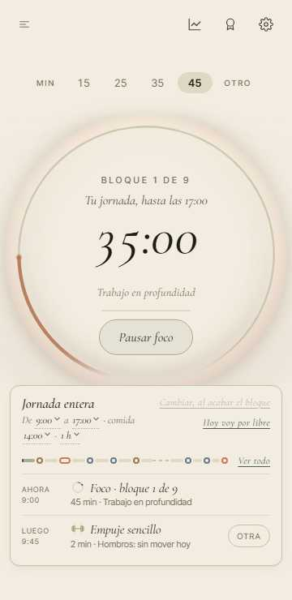<figcaption><b>C</b> · «Cambiar, al acabar el bloque», apagado hasta las 9:45. Cabe en la línea del título.</figcaption></figure>
  </div>
  <figure class="d">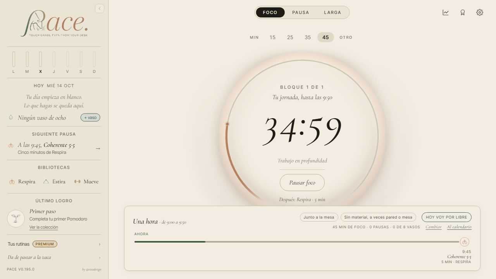<figcaption><b>B</b> a 1280.</figcaption></figure>
  <div class="ops">
    <div class="op"><header><i>A</i><span>Preguntar con una ventana</span></header></div>
    <div class="op reco"><header><i>B</i><span>El bloque pasa al día nuevo, sin preguntar</span><span class="chip">Recomendada</span></header></div>
    <div class="op"><header><i>C</i><span>«Cambiar» apagado mientras corre un bloque</span></header></div>
  </div>
  <div class="porque"><b>Recomiendo B</b><span>Nada se pierde, nada tapa la pantalla y no añade una pregunta.</span></div>
  <p class="coste">Si eliges A, B o C: <b>medio</b>.</p>
</section>

<section class="q" id="c6">
  <p class="rot">6 · revisión de ChatGPT</p>
  <h3>¿Dónde salen, en Estadísticas › Hoy, las sesiones que hiciste por tu cuenta?</h3>
  <p class="hoy"><b>Hoy:</b> los totales de arriba las cuentan, pero abajo solo salen las paradas del plan: 2 min de Box a las 8:50 y 4 de Cuello suave a las 11:20 no aparecen en ningún sitio.</p>
  <div class="fotos">
    <figure class="m">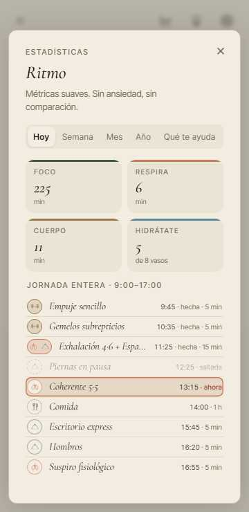<figcaption>Hoy: ni las 8:50 ni las 11:20.</figcaption></figure>
    <figure class="m">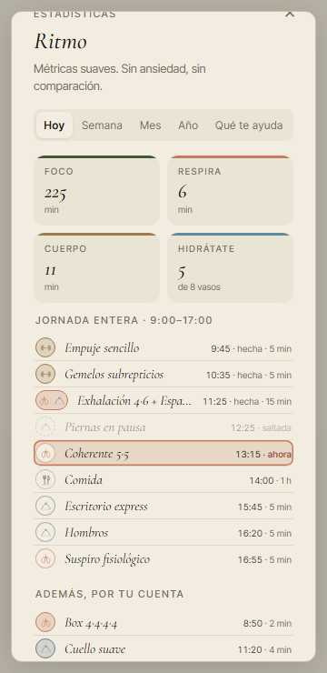<figcaption><b>A</b> · tras el plan, «Además, por tu cuenta». Alarga la lista.</figcaption></figure>
    <figure class="m">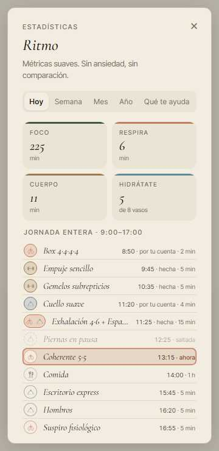<figcaption><b>B</b> · mezcladas por hora, con «por tu cuenta».</figcaption></figure>
    <figure class="m">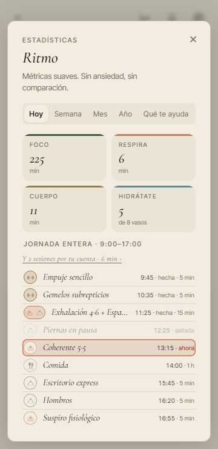<figcaption><b>C</b> · «Y 2 sesiones por tu cuenta · 6 min ›»; se ven al tocarla.</figcaption></figure>
  </div>
  <figure class="d">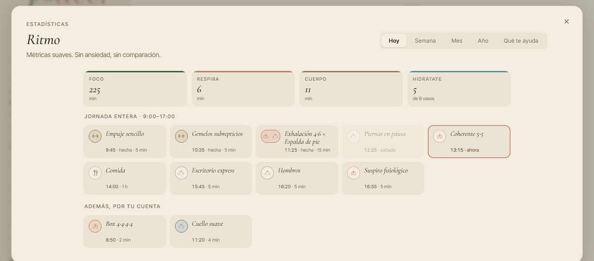<figcaption><b>A</b> a 1280.</figcaption></figure>
  <div class="ops">
    <div class="op reco"><header><i>A</i><span>Debajo, aparte</span><span class="chip">Recomendada</span></header></div>
    <div class="op"><header><i>B</i><span>Mezcladas por hora</span></header></div>
    <div class="op"><header><i>C</i><span>Una línea que se abre</span></header></div>
  </div>
  <div class="porque"><b>Recomiendo A</b><span>Se ven sin tocar nada y el plan se sigue leyendo como plan.</span></div>
  <p class="coste">Si eliges cualquiera: <b>medio</b>.</p>
</section>

<section class="q" id="c7">
  <p class="rot">7 · revisión de ChatGPT</p>
  <h3>Una pausa hecha, ¿dice los minutos del hueco o los que hiciste?</h3>
  <p class="hoy"><b>Hoy:</b> la pausa de las 9:45 tiene 5 min y haces Empuje sencillo, que dura 2: la tarjeta dice «hecha · 5 min». Y la de ahora, ya hecha, dice «ahora».</p>
  <div class="fotos">
    <figure class="m"><figcaption>Hoy: «hecha · 5 min».</figcaption></figure>
    <figure class="m"><figcaption><b>A</b> · «hecha · 2 min». Ocupa lo mismo.</figcaption></figure>
    <figure class="m">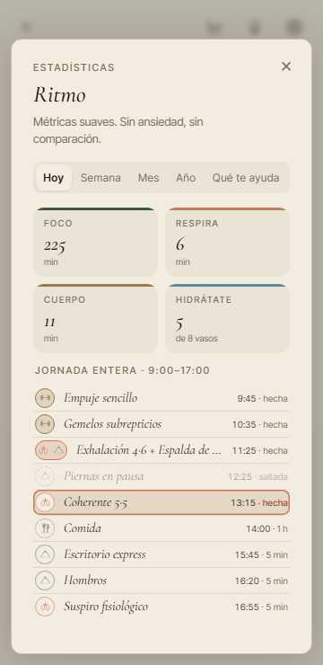<figcaption><b>B</b> · «hecha», sin minutos.</figcaption></figure>
    <figure class="m">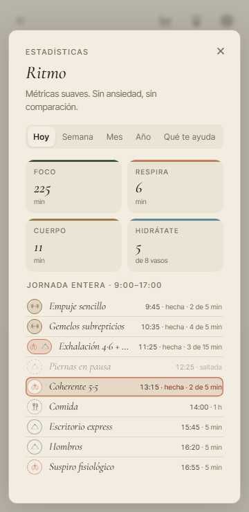<figcaption><b>C</b> · «hecha · 2 de 5 min». A 360 el nombre se corta antes.</figcaption></figure>
  </div>
  <figure class="d">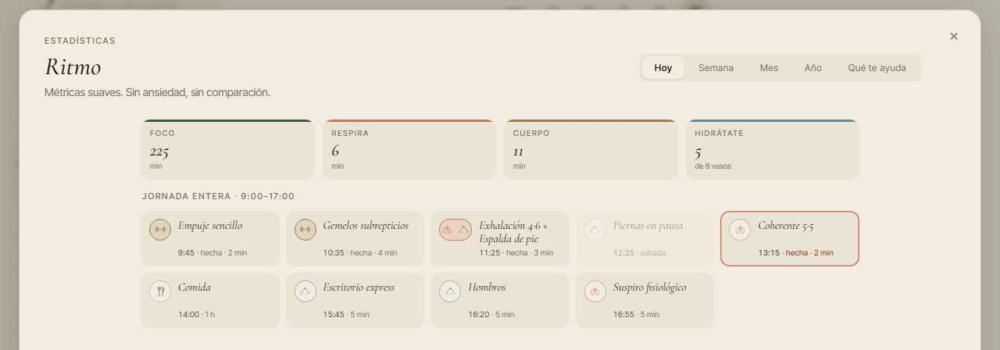<figcaption><b>A</b> a 1280. En las tres, la pausa de ahora ya hecha dice «hecha».</figcaption></figure>
  <div class="ops">
    <div class="op reco"><header><i>A</i><span>Lo que hiciste</span><span class="chip">Recomendada</span></header></div>
    <div class="op"><header><i>B</i><span>Sin minutos</span></header></div>
    <div class="op"><header><i>C</i><span>Las dos cifras</span></header></div>
  </div>
  <div class="porque"><b>Recomiendo A</b><span>Dice lo que hiciste y cabe igual que hoy.</span></div>
  <p class="coste">Si eliges cualquiera: <b>poco</b>.</p>
</section>

<section class="q" id="aro">
  <p class="rot">Aro · caza de rendimiento</p>
  <h3>¿El aro de Foco se desliza siempre, o solo cuando el paso se nota?</h3>
  <p class="hoy"><b>Hoy:</b> en un bloque de 25 min el aro avanza medio píxel por segundo y el móvil lo redibuja suave igualmente: con un Foco en marcha, un móvil barato va ocupado 4,6 s de cada 6. Los aros de abajo van deprisa para que veas la diferencia.</p>
  <div class="mando" role="group" aria-label="Duración del bloque de ejemplo">
    <span>Bloque de ejemplo:</span>
    <button type="button" id="b-corto" aria-pressed="true">1 minuto</button>
    <button type="button" id="b-largo" aria-pressed="false">25 minutos</button>
  </div>
  <div class="aros">
    <div class="op" data-letra="A"><header><i>A</i><span>Como ahora: siempre se desliza</span></header>
      <svg class="aro" viewBox="0 0 100 100" aria-hidden="true"><circle class="pista" cx="50" cy="50" r="42" fill="none" stroke-width="1.3"/><circle class="arco" cx="50" cy="50" r="42" fill="none" stroke-width="1.6" stroke-linecap="round" pathLength="1000" stroke-dasharray="1000" stroke-dashoffset="1000" transform="rotate(-90 50 50)"/><text x="50" y="56" text-anchor="middle">0:00</text></svg>
      <p class="mide">Móvil ocupado: <b>4,6 s de cada 6</b></p></div>
    <div class="op reco" data-letra="B"><header><i>B</i><span>Se desliza si el paso se nota</span><span class="chip">Recomendada</span></header>
      <svg class="aro" viewBox="0 0 100 100" aria-hidden="true"><circle class="pista" cx="50" cy="50" r="42" fill="none" stroke-width="1.3"/><circle class="arco" cx="50" cy="50" r="42" fill="none" stroke-width="1.6" stroke-linecap="round" pathLength="1000" stroke-dasharray="1000" stroke-dashoffset="1000" transform="rotate(-90 50 50)"/><text x="50" y="56" text-anchor="middle">0:00</text></svg>
      <p class="mide">En bloques largos: <b>1,9 s de cada 6</b></p></div>
    <div class="op" data-letra="C"><header><i>C</i><span>Nunca se desliza: saltitos</span></header>
      <svg class="aro" viewBox="0 0 100 100" aria-hidden="true"><circle class="pista" cx="50" cy="50" r="42" fill="none" stroke-width="1.3"/><circle class="arco" cx="50" cy="50" r="42" fill="none" stroke-width="1.6" stroke-linecap="round" pathLength="1000" stroke-dasharray="1000" stroke-dashoffset="1000" transform="rotate(-90 50 50)"/><text x="50" y="56" text-anchor="middle">0:00</text></svg>
      <p class="mide">Siempre: <b>1,9 s de cada 6</b>; en bloques cortos se nota el salto</p></div>
  </div>
  <p class="nota" id="nota-bloque">Con 1 minuto, el aro avanza unos 15 px por segundo: A y B se deslizan, C salta.</p>
  <div class="porque"><b>Recomiendo B</b><span>Se ve como hoy y el móvil descansa en los bloques de verdad.</span></div>
  <p class="coste">Si eliges B o C: <b>poco</b>. A: <b>nada</b>.</p>
</section>

<section class="q" id="v1">
  <p class="rot">V1 · versión nueva (caza de rendimiento)</p>
  <h3>Con la web abierta todo el día, ¿cómo se entera de que hay versión nueva?</h3>
  <p class="hoy"><b>Hoy:</b> una pestaña abierta todo el día no se entera hasta que alguien recarga. Y al recargar, la página ya es la nueva pero aun así dice «Hay una versión nueva de PACE»; mientras ese aviso espera, un dibujo cambiado se sigue viendo como el de antes. Lo medido es la web.</p>
  <div class="casos tabla"><table>
    <thead><tr><th>Quién</th><th>A · como ahora</th><th>B · preguntar al volver y cada hora</th></tr></thead>
    <tbody>
      <tr><td><b>Irene</b> deja PACE en una pestaña de 9 a 17</td><td>Sigue con la versión de por la mañana todo el día</td><td>Al volver a la pestaña, o en menos de una hora, ve «Hay una versión nueva» cuando no está en una sesión</td></tr>
      <tr><td><b>Irene</b>, a mitad de Respira</td><td>No ve nada</td><td>Tampoco: el aviso espera a que acabe</td></tr>
      <tr><td><b>Tomás</b> recarga por la mañana</td><td>Ya tiene la nueva y aun así le sale el aviso</td><td>No le sale (este arreglo va con B)</td></tr>
    </tbody>
  </table></div>
  <div class="ops">
    <div class="op"><header><i>A</i><span>Como ahora</span></header></div>
    <div class="op reco"><header><i>B</i><span>La app pregunta al volver a la pestaña y cada hora; el aviso solo sale fuera de una sesión</span><span class="chip">Recomendada</span></header></div>
  </div>
  <div class="porque"><b>Recomiendo B</b><span>Quien trabaja con PACE abierto recibe los arreglos el mismo día sin que nada le corte.</span></div>
  <p class="coste">Si eliges B: <b>medio</b>, con el aviso de más y los dibujos viejos arreglados a la vez. A: <b>nada</b>.</p>
</section>

<section class="q" id="v2">
  <p class="rot">V2 · versión nueva (caza de rendimiento)</p>
  <h3>Si actualizas en una pestaña, ¿se corta la sesión de la otra?</h3>
  <p class="hoy"><b>Hoy:</b> pulsar «Actualizar» en una pestaña recarga sola la otra, aunque esté a mitad de Respira, y no sigue en la sesión.</p>
  <div class="casos tabla"><table>
    <thead><tr><th>Quién</th><th>A · como ahora</th><th>B · espera a que acabe</th></tr></thead>
    <tbody>
      <tr><td><b>Irene</b>, Respira en una pestaña y el correo con PACE en otra; pulsa «Actualizar» en la segunda</td><td>Respira se corta a la mitad y vuelve a la home</td><td>Respira sigue; al acabar, esa pestaña se pone al día sola</td></tr>
      <tr><td><b>Tomás</b>, una sola pestaña</td><td>Nada cambia</td><td>Nada cambia</td></tr>
    </tbody>
  </table></div>
  <div class="ops">
    <div class="op"><header><i>A</i><span>Como ahora</span></header></div>
    <div class="op reco"><header><i>B</i><span>La pestaña que está en una sesión espera a terminarla y se pone al día al acabar</span><span class="chip">Recomendada</span></header></div>
  </div>
  <div class="porque"><b>Recomiendo B</b><span>Una actualización nunca corta una pausa.</span></div>
  <p class="coste">Si eliges B: <b>medio</b>. A: <b>nada</b>.</p>
</section>

<section class="q" id="d6">
  <p class="rot">D-6</p>
  <h3>¿Retiras los logros que premian trasnochar?</h3>
  <p class="hoy"><b>Hoy:</b> «Ocaso» pide cinco días con sesión después de las 21 h y «Búho», secreto, usar PACE entre las 2 y las 4 de la madrugada. Premian lo contrario de una jornada que acaba a su hora; «Nunca a medianoche» ya existe.</p>
  <div class="fotos">
    <figure class="m">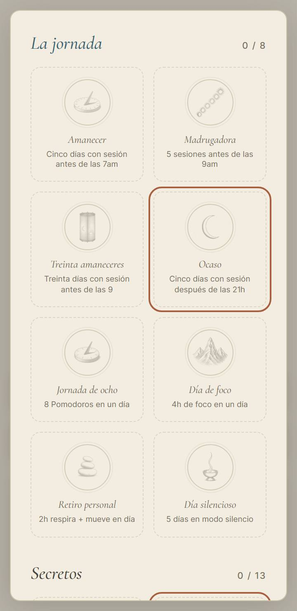<figcaption>Hoy, en el móvil: Ocaso, marcado con un trazo. Búho está en Secretos, como «?».</figcaption></figure>
  </div>
  <figure class="d">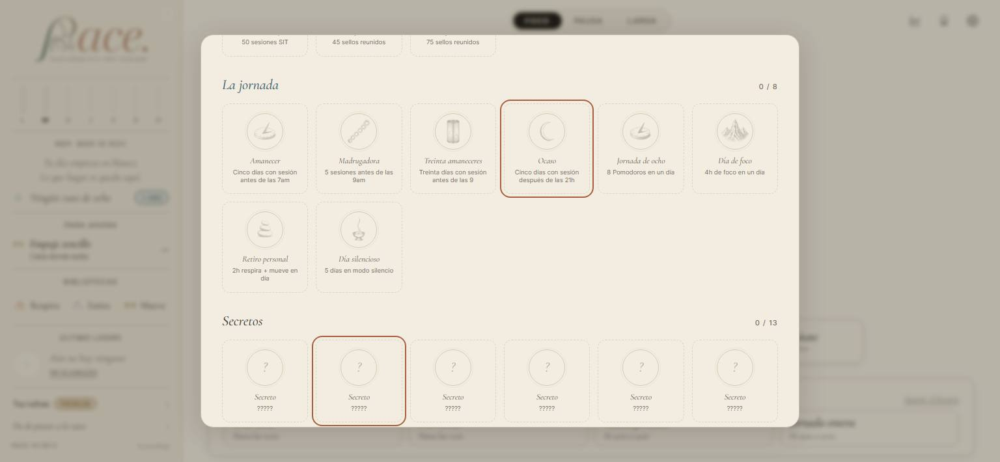<figcaption>Hoy, a 1536 × 710: Ocaso en La jornada y Búho en Secretos, marcados.</figcaption></figure>
  <div class="ops">
    <div class="op"><header><i>A</i><span>Como están</span></header></div>
    <div class="op reco"><header><i>B</i><span>Retirarlos del catálogo; quien ya los tenga los conserva</span><span class="chip">Recomendada</span></header>
      <div class="fotos">
        <figure class="m">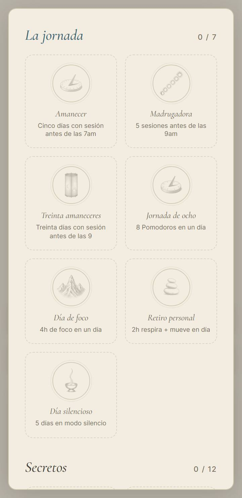<figcaption><b>B</b> · La jornada, 0 / 7; Secretos, 0 / 12.</figcaption></figure>
      </div>
      <figure class="d">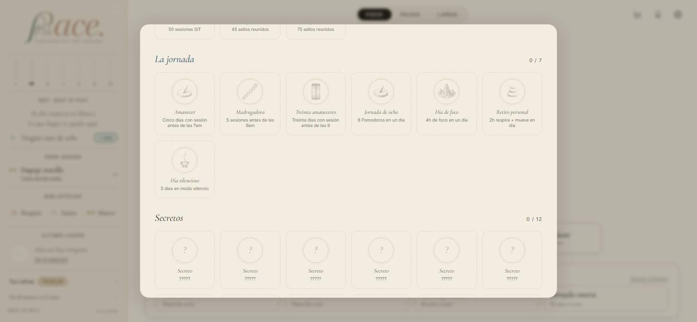<figcaption><b>B</b> a 1536 × 710.</figcaption></figure>
    </div>
    <div class="op"><header><i>C</i><span>Cambiarlos por uno de cerrar la jornada a su hora</span></header>
      <div class="fotos">
        <figure class="m">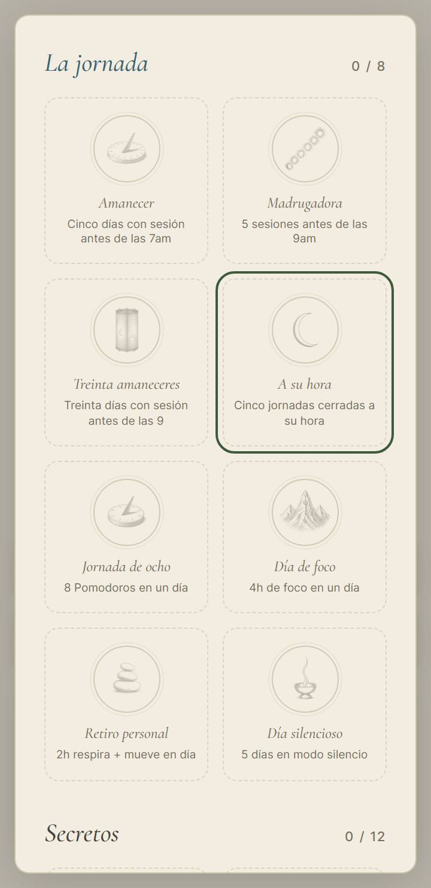<figcaption><b>C</b> · «A su hora: cinco jornadas cerradas a su hora», en el sitio de Ocaso. Su dibujo sería otro.</figcaption></figure>
      </div>
      <figure class="d">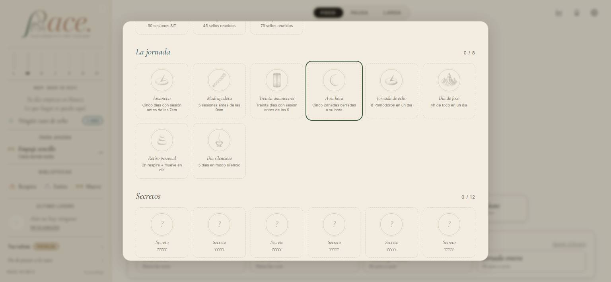<figcaption><b>C</b> a 1536 × 710.</figcaption></figure>
    </div>
  </div>
  <p class="mide">Medido: quitar o cambiar una casilla no empuja nada fuera; el panel de logros ya se desliza.</p>
  <div class="porque"><b>Recomiendo B</b><span>Van contra el tono de PACE, y uno es secreto: nadie los echa de menos.</span></div>
  <p class="coste">Si eliges B: <b>poco</b>. C: <b>medio</b> (un logro nuevo con su dibujo y su prueba). A: <b>nada</b>.</p>
</section>

<section class="q" id="s3">
  <p class="rot">S3 · sin opciones todavía</p>
  <h3>Un código de PACE completo, ¿se puede pasar a otra persona?</h3>
  <p class="hoy">En <code>STATE.md</code> sigue abierta desde el 25 oct.: el código que abre PACE completo en la web funciona en cualquier navegador, así que quien lo compra puede dárselo a otra persona. Nadie escribió aún las opciones ni su coste, así que no la pinto ni la recomiendo. Si quieres decidirla antes de cobrar, se prepara con su tabla de casos.</p>
</section>

<div class="grupo"><p class="rot">Al final</p><h2>Solo falta tu sí</h2><p>Ya están hechos y probados en su rama. No cambian nada a la vista; esto es lo que nota quien usa PACE.</p></div>
<ul class="lista">
  <li><b>La cuenta del día (ChatGPT 5, 1, 3 y 2).</b> Un bloque no se cuenta dos veces si una pestaña despierta tarde (5); un Foco pausado suma solo lo que contó el aro (1); cambiar el horario o la cadencia ya no rehace lo hecho (3); recargar no cambia la hora a la que empezó un Foco (2). Las cifras de «Hoy» cuadran.</li>
  <li><b>Las barras de progreso, más ligeras (caza de rendimiento).</b> En Respira, Foco, Mueve y Estira el móvil trabaja menos: en Respira, de 2,44 a 2,16 s ocupados de cada 6. Se ven igual, comparadas punto a punto.</li>
  <li><b>Las letras se bajan una vez (caza de rendimiento).</b> De 12 descargas a 5: unos 290 KB menos la primera vez que alguien abre la web, con el texto idéntico.</li>
  <li><b>Dos renovaciones a la vez de la mensual nunca se pisan (el <code>guardar()</code> atómico).</b> Hasta que haya mensual no se nota; después, una renovación nunca pisa otra.</li>
</ul>

<div class="grupo"><p class="rot">Al final</p><h2>Solo puedes hacerlo tú</h2></div>
<ul class="lista">
  <li><b>Abrir «Avísame»:</b> el nombre que firma su privacidad y el almacén de correos en Cloudflare. Sin eso, /premium no guarda a nadie.</li>
  <li><b>Los 12 testers de Android</b> (tienes 5 o 6; /beta y el grupo están listos), subir la 0.191.1 a Play y darla en TestFlight. Es lo que fija la fecha de v1.</li>
  <li><b>El correo de Stripe</b> que recuerda el fin de la prueba, antes de encender la mensual.</li>
  <li><b>Las cuentas de Google Cloud y Microsoft Entra</b>, sin las que el calendario automático de la web no funciona para nadie.</li>
  <li><b>La revisión de un fisioterapeuta</b> de Fondos en silla y de los ejercicios aparcados, antes de v1.</li>
</ul>

<footer>Fotos nuevas (D-2, D-3, D-6 y D-7): la 0.197.0 en Chromium, español, tema claro, con el reloj puesto el 10 nov. a las 9:00 o el lunes 23 nov. a las 9:05, y lo de pago como sería desde v1. Las de las propuestas 1, 2 y 4 son de la auditoría de Fable; las de 4, 6 y 7, de la revisión de ChatGPT; el aro, de la caza de rendimiento. Nada de esto está en la app.</footer>
</main>

<script>
(function () {
  var aros = Array.prototype.map.call(document.querySelectorAll('#aro [data-letra]'), function (el) {
    return { letra: el.getAttribute('data-letra'), arco: el.querySelector('.arco'), texto: el.querySelector('text') };
  });
  var quieto = window.matchMedia && window.matchMedia('(prefers-reduced-motion: reduce)').matches;
  var bloque = 60, s = 0, PX = 940; // el aro de la app a 360 px mide unos 940 px de vuelta
  function pinta() {
    var paso = PX / bloque;
    aros.forEach(function (a) {
      var desliza = a.letra === 'A' || (a.letra === 'B' && paso >= 1);
      a.arco.style.transition = (desliza && !quieto) ? 'stroke-dashoffset 1s linear' : 'none';
      a.arco.setAttribute('stroke-dashoffset', String(1000 - 1000 * (s / bloque)));
      var m = Math.floor(s / 60), r = s % 60;
      a.texto.textContent = m + ':' + (r < 10 ? '0' : '') + r;
    });
  }
  function elige(seg) {
    bloque = seg; s = 0;
    document.getElementById('b-corto').setAttribute('aria-pressed', String(seg === 60));
    document.getElementById('b-largo').setAttribute('aria-pressed', String(seg === 1500));
    document.getElementById('nota-bloque').textContent = seg === 60
      ? 'Con 1 minuto, el aro avanza unos 15 px por segundo: A y B se deslizan, C salta.'
      : 'Con 25 minutos, el aro avanza medio píxel por segundo: los tres se ven quietos. La diferencia está en lo que trabaja el móvil.';
    aros.forEach(function (a) { a.arco.style.transition = 'none'; });
    pinta();
  }
  document.getElementById('b-corto').addEventListener('click', function () { elige(60); });
  document.getElementById('b-largo').addEventListener('click', function () { elige(1500); });
  setInterval(function () { s = (s + 1) % (bloque + 1); if (s === 0) aros.forEach(function (a) { a.arco.style.transition = 'none'; }); pinta(); }, 1000);
  pinta();
})();
</script>
